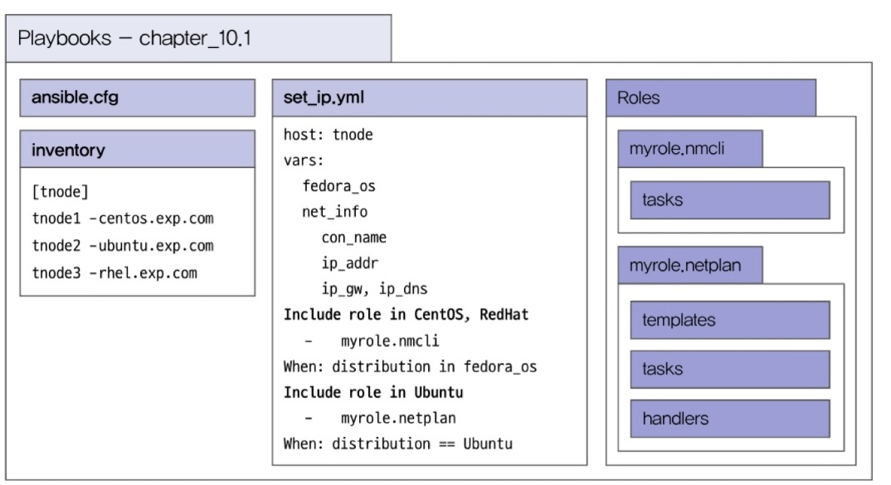

CHAPTER 10 환경 설정 자동화
10.1 네트워크 IP 설정하기
사전 분석
- nmcli 명령어는
community.general.nmcli모듈을 제공한다. - netplan은 파일이므로 사전에 netplan 파일 구조를 확인하고 jinja2 템플릿으로 작성한다.
- 운영체제가 레드햇이면서 앤서블 오토메이션 플랫폼을 사용할 경우에는 redhat.rhel_system_roles.network 라는 룰을 사용할 수 있다.
- 예제에서는 ethernet 타입의 네트워크 IP를 설정한다.
- IP 설정 관련 정보는 메인 플레이북에서 변수로 정의한다.
- 변수로 정의한 네트워크 인터페이스가 실제 호스트에 존재하는지 앤서블 팩트를 통해 확인한다.
- 운영체제가 CentOS이거나 레드햇일 경우에는 nmcli 모듈을 사용하여 IP를 설정한다. (OS 구분)
- 운영체제가 우분투일때 netplan 파일을 이용하여 IP를 설정한다. (OS 구분)

10.2 호스트명 설정하기
사전 분석
- 앤서블로 접근하기 위한 대상 서버들은 이미 제어 노드의 인벤토리에 등록되어 있다.
- 호스트명 설정을 하기 위해 ansible.builtin.hostsname 모듈을 사용한다.
- /etc/hosts 에 tnode 정보들을 등록하기 위해 필요한 정보들을 변수로 정의한다.
- 호스트명을 hosts 파일에 추가할 때는 ansible.builtin.lineinfile 모듈을 사용한다.

webserver.example.com
| | |
| | +-- 최상위 도메인(TLD)
| +-------- 도메인
+----------------- 호스트명
10.3 NFS 서버 설치 및 NFS 스토리지 마운트하기
사전 분석
- NFS 구성 방법 및 플레이북 모듈은 챗 GPT를 통해 찾은 플레이북을 참조한다.
- 실습 환경에서는 NFS 서버를 CentOS에 구성한다.
- NFS 서버가 구성되면 나머지 두 노드에는 NFS 스토리지를 마운트한다.
- 플레이북 재사용을 위한 NFS 서버 및 클라이언트는 롤로 구성한다.


10.4 DB 애플리케이션 설치하기
사전 분석
- 테스트 환경에서 가장 많이 설치하는 데이터베이스인 MYSQL을 AWS CentOS에 설치한다.
- 앤서블 갤럭시에서 우분투에서 설치할 수 있는 MySQL 롤을 검색하여 해당 롤을 이용한다.
- 검색된 롤은 레드햇과 데비안 계열 운영채제에서 MySQL을 설치할 수 있다.
플레이북 설계
- ansible.cfg
- inventory
[db]
tnode-centos.exp.com - install_mysql.yml
roles:
- role: geerlingguy.mysql - Roles
자신이 사용하고 있는 컬렉션 명(geerlingguy.mysql)